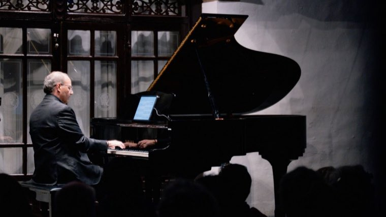
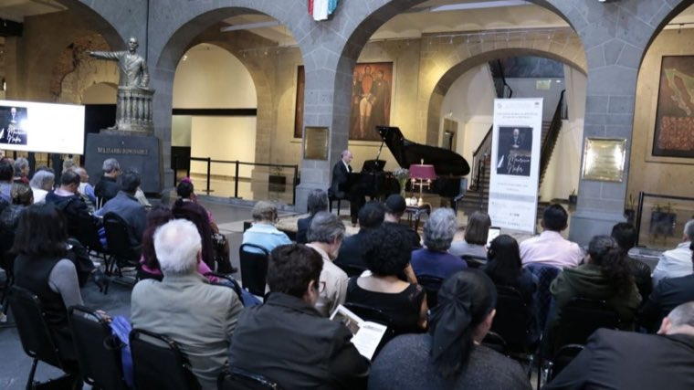

Piano de Película
A 80 años de Manuel de Falla · Lemonnier, Ravel, Addinsell, Bernstein
Instituto Mexicano para la Justicia, Coyoacán · Ciudad de México
Pianista · Concertista de Bellas Artes
Del barroco al cine, en veintidós países y más de treinta discos.
“Cuando Mauricio Náder toca el piano, despierta una parte insólita del público: el mundo de las pasiones, la sensualidad, la exaltación.”
“Today, no other Mexican pianist matches Mauricio Nader’s busy concert schedule, precise technique and intense passion.”
“From beginning to end, Náder obtained from the piano a pearl-like sound, underlying every phrase with elegance and grace.”
Septiembre y octubre de 2026
A 80 años de Manuel de Falla · Lemonnier, Ravel, Addinsell, Bernstein
Instituto Mexicano para la Justicia, Coyoacán · Ciudad de México
En torno a la compositora mexicana Gabriela Ortiz
Castillo de Chapultepec · Ciudad de México
Para pianistas y grupos de cámara
En línea
Feria Internacional del Libro de Monterrey
Museo de Arte Contemporáneo (MARCO) · Monterrey, N.L.
Con Gerardo Martínez Cristerna, filósofo
Casa de Tabasco en México «Carlos Pellicer» · Ciudad de México
Orquesta Sinfónica del Estado de México · Rodrigo Macías, director
Toluca, Estado de México
A 80 años de Manuel de Falla
Librería Rosario Castellanos, FCE · Ciudad de México
Sobre Mauricio Nader

Empezó a tocar a los nueve años y a los diecinueve debutó como solista con la Orquesta Sinfónica Nacional en el Palacio de Bellas Artes. Estudió en el Conservatorio Nacional, en Houston y en Eastman, donde recibió por unanimidad el Performer’s Certificate.
Hoy es concertista de Bellas Artes con el rango de concertino. Ha tocado en veintidós países, grabado más de treinta discos y estrenado en México los Makrokosmos de George Crumb. Da clases particulares, imparte masterclases y escribe arreglos por encargo.
